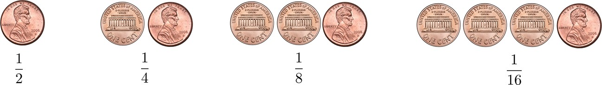

[2.1] Infinite Series
Contents
[2.1] Infinite Series¶
Gentle Introduction to Probability
Imagine that you have a fair coin. If you get a tail, you flip the coin again. You do this repeatedly until you finally get a head. What is the probability that you need to flip the coin three times to get one head?
This is a warm-up exercise. Since the coin is fair, the probability of obtaining a head is \(\frac{1}{2}\). The probability of getting a tail followed by a head is \(\frac{1}{2} \times \frac{1}{2} = \frac{1}{4}\). If you follow this logic, you can write down the probabilities for all other cases. The below figures shows these probabilities for better understanding.

We can also summarize these probabilities using Histogram as shown below. We see that the sequence above can be infinitely long.
import numpy as np
import matplotlib.pyplot as plt
p = 1/2
n = np.arange(0,10)
X = np.power(p,n)
plt.bar(n,X)
plt.xlabel("Number of coin flips")
plt.ylabel("Probability of head on last flip")
plt.show()
Another question that can be asked based on the above experiment is, On average, if you want to be \(90\%\) sure that you will get a head, what is the minimum number of attempts you need to try?
This problem can be answered by analyzing the sequence of probabilities. If we make two attempts, then the probability of getting a head is the sum of the probabilities for one attempt and that of two attempts:
This means if we try for 4 attempts we will have \(93.75 \%\) probability to obtain a head.
This section is a gentle introduction to calculation of probability without formulae. Probability will be reviewed in detail in the next chapter.
[2.1.1] Geometric Series¶
A geometric series is the sum of a finite or an infinite sequence of numbers with a constant ratio between successive terms. As we have seen in the previous example, a geometric series appears naturally in the context of discrete events. In chapter, we will use geometric series when calculating expectation and moments of a random variable.
Geometric Series
Finite Geometric Sequence of power \(n \enspace \rightarrow \enspace \{1,r,r^2,...,r^n\}\)
Infinite Geometric Sequence of numbers \(\enspace \rightarrow \enspace \{1,r,r^2,...\}\)
Sum of geometric series
Sum of a finite geometric series of power \(n\) is:
Sum of an infinite geometric series is (if \(0 < r < 1\)):
See also
Proofs for above equations to be added later.
Trying to refer (2.1.1)